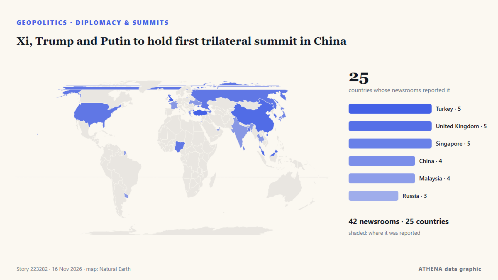

Γεωπολιτική, Πολιτική & Ασφάλεια
ΧορηγούμενοΠαρουσιάζεται από  Cybernetics and Artificial Intelligence Lab Welcome to the Cybernetics and Artificial Intelligence Laboratory, established at the Department of Business Administration of the National and Kapodistrian University of Athens. The lab is headed by Professor Dimitrios Thomakos. The lab aims to do research that can be published in top venues. Our research uses tools and methods of Artificial Intelligence, and lies in the following areas: - Forecasting - Decision making - Cyber security - Finance We are always looking forward to collaborating with exceptional students!
Cybernetics and Artificial Intelligence Lab Welcome to the Cybernetics and Artificial Intelligence Laboratory, established at the Department of Business Administration of the National and Kapodistrian University of Athens. The lab is headed by Professor Dimitrios Thomakos. The lab aims to do research that can be published in top venues. Our research uses tools and methods of Artificial Intelligence, and lies in the following areas: - Forecasting - Decision making - Cyber security - Finance We are always looking forward to collaborating with exceptional students!
Οι τίτλοι των ειδήσεων παρουσιάζονται στα αγγλικά, όπως δημοσιεύτηκαν.

Διπλωματία & σύνοδοιXi, Trump and Putin to hold first trilateral summit in China
Leaders expected to discuss nuclear disarmament, while Ukraine may remain off the agenda. από News of Bahrain
| 3 Νοε | 352 |
|---|---|
| 4 Νοε | 397 |
| 5 Νοε | 327 |
| 6 Νοε | 227 |
| 7 Νοε | 211 |
| 8 Νοε | 200 |
| 9 Νοε | 315 |
| 10 Νοε | 287 |
| 11 Νοε | 261 |
| 12 Νοε | 262 |
| 13 Νοε | 224 |
| 14 Νοε | 177 |
| 15 Νοε | 177 |
| 16 Νοε | 71 |
Drone strikes reportedly hit 3 commercial ships near Romania's Black Sea coast
Incidents come amid a series of drone attacks targeting commercial shipping in the Black Sea. από Anadolu Agency (English)
Cape Verde: Neves Wins Second Term As Cape Verde's President
[RFI] José Maria Neves has won a second five-year term as Cape Verde's president, according to provisional results from Sunday's election. από AllAfrica
Elisoa Crawford strikes gold as Northern Ireland collect five team medals in Dublin
Government needs to be honest with us about the threats we face. από Irish Independent
Trump on ’60 Minutes’ Reflects on Midterm Loss, Death and Forgiveness: ‘I Do Hate Some of My Enemies’
President Trump told “60 Minutes” that he blames Republican candidates and the war in Iran for the party’s midterm defeat, and acknowledged that his mass deportation policy was “too tough.” Sitting… από Variety
EU forces board suspected Russian shadow fleet tanker in Mediterranean
EU foreign policy chief Kaja Kallas says vessel was sailing under false flag as EU prepares fresh Russia sanctions. από Anadolu Agency (English)
UK PM Burnham ready to confront 'obvious truth' of Brexit's costs
LONDON, Nov 15 - British Prime Minister Andy Burnham is set on Monday to say he wants to have a difficult conversation about the \"obvious truth\" of the costs of Brexit in order to reset Britain's… από The Straits Times
Twelve APEC leaders to attend CEO Summit in Shenzhen
Twelve leaders from Asia-Pacific Economic Cooperation (APEC) member economies will attend the 2026 APEC CEO Summit in Shenzhen, a Chinese trade official said on Sunday. από CGTN (China)
Ex-Bangladesh PM Hasina to return home despite 'threat of death'
Ousted Bangladesh prime minister Sheikh Hasina, sentenced to capital punishment after she was toppled in 2024, told AFP on Monday that she would return home in December despite "t... από Oman Observer
Iran targets US military base in Bahrain with drone attack
It marks the second attack on the country in three days and comes as the US and Iran remain locked in a stand-off over the Strait of Hormuz. από BBC News
Eisenkot says Netanyahu can’t remain Israel PM amid alleged vote meddling
Arab party members were reportedly arrested before Israeli elections based on unfounded evidence from the PM's office. από Al Jazeera English
Brazil's Lula to attend UN COP31 climate summit in Turkey
BRASILIA, Oct 30 (Reuters) - Brazilian President Luiz Inacio Lula da Silva will attend the COP31 climate summit in Antalya, Turkey, the Brazilian presidency said on Friday. από Al-Monitor
Chinese premier lauds 'extraordinary' ties with ASEAN ahead of Trump visit
In opening remarks to regional leaders during the Association of Southeast Asian Nations summit in Manila, Li said that at a time of growing unilateralism and protectionism and recurring geopolitical… από The Business Standard (Bangladesh) (working feed)
Israel kills senior Hamas commander in Gaza two months after killing his predecessor as ceasefire stagnates
Israel killed a senior Hamas commander involved in planning the October 7 attacks only two months after killing his predecessor, a fresh sign of how the Gaza conflict remains active despite a… από Egypt Independent
Suspected China spy linked to Nvidia’s ex-boss left in 2025, Megaspeed says
Alice Huang, a suspected China spy who has been linked to Nvidia's former boss Jensen Huang, left her executive role at Megaspeed in August last year, the company says. από MyJoyOnline
US floated idea swapping Ukrainian territory for NATO membership: Zelensky
Ukrainian President Volodymyr Zelensky said U.S. negotiators floated the possibility of Ukraine surrendering in the eastern Donbas region and conceding it to Russia in exchange for NATO membership. από The Hill
Bahrain intercepts Iranian aerial attacks as Tehran says it attacked US base
BAHRAIN intercepted and destroyed several Iranian aerial attacks, it said on Sunday, while Tehran said it had struck… από BusinessWorld
Iran says drones hit US radar system in Bahrain
Iran's Revolutionary Guard says it destroyed a U.S. early warning radar in Bahrain, marking the first such claim in months. από ABC News (International)
Trump admin warns air travellers of another messy day
Trump admin warns air travelers of another messy day. από Gulf News
Eisenkot says Netanyahu cannot stay in office ‘a minute longer’
Gadi Eisenkot, a prime ministerial candidate, calls for Benjamin Netanyahu to resign following allegations involving electoral interference by an aide. από Arab News
Bukele says Salvadoran troops destroyed gang HQ in Haiti
Santo Domingo.- President Luis Abinader expressed support for Salvadoran President Nayib Bukele regarding the security situation in Haiti, while highlighting the Dominican Republic’s cooperation with… από Dominican Today
Zelenskyy warns Starshield restrictions threaten Ukraine’s energy defenses
Restrictions on the system hamper Kyiv’s ability to shoot down Russian drones. από ABC News (International)
Democrat Colom wins Mississippi Senate seat, becomes state’s first Black senator since 1874
He became the first Democrat to win a Mississippi Senate seat since John Stennis in 1982. από The Straits Times
With US midterms underway, courts rebuff Trump's pressure on state election officials
Nov 3 - In the hours before polls opened for the US midterm elections on Tuesday, federal judges issued a series of rulings restricting the Trump administration's unprecedented efforts to pressure… από The Straits Times
Yemen government forces withdraw from area near Bab el-Mandeb Strait, Houthis in control
Yemeni forces fighting for the internationally recognised Saudi-backed government said on Sunday that they were withdrawing from an area overlooking the strategic Bab el-Mandeb Strait, leaving the… από Business Recorder
Andy Burnham writes 'most of his own speeches' after aide pictured using ChatGPT
Downing Street has said Prime Minister Andy Burnham writes "most of his own speeches" after an aide was photographed using ChatGPT. από Chronicle Live (Newcastle)
Trump says may hold off on Iran attacks barring new provocations
Trump has told senior advisers in recent days that he may hold off on attacking Iran if the US faces no new provocations from Tehran or Yemen's Houthis. από The New Arab
Ukraine strikes two petrochemical plants in Tatarstan and Russian helicopter manufacturing facility
Ukraine's General Staff says Ukrainian forces struck Nizhnekamskneftekhim, the Nizhnekamsk refinery's only primary distillation unit and the Monolit helicopter parts plant in Bryansk Oblast. από Ukrainska Pravda (English)
Trade war in focus at ASEAN summit ahead of Trump’s arrival
The late arrival of US President Donald J. από BusinessWorld
Indonesia, 17 countries condemn Israeli airstrike on Gaza hospital
Indonesia and 17 other Arab and Islamic countries have strongly condemned an Israeli airstrike on the Nasser Medical ... από Antara (English)
'Chinese Spy' Alice Huang Left Company In 2025: Megaspeed Amid Nvidia Row
Megaspeed said it would not comment on alice Huang's personal and private matters. από NDTV
Saudi-led coalition says it intercepts 2 Houthi ballistic missiles targeting Riyadh
The Saudi-led coalition said early Sunday that its air defenses intercepted and destroyed two ballistic missiles launched by Yemen’s Houthis toward Riyadh, the Saudi capital. από Daily Mirror
49th ASEAN Summit kicks off in Philippines
President Ferdinand Marcos Jr. on Thursday appealed for public understanding over disruptions caused by preparations for the 49th ASEAN Summit and Related… από Daily Tribune
Israeli drone strike kills 2 Palestinians in Gaza, and other Mideast news
An Israeli drone strike killed two Palestinians in the Gaza Strip on Saturday, hospital officials said. από The Canadian Press (via CityNews)
Production suspended at Iraq's Khor Mor gas field after drone attack
Production was halted on Sunday at Iraq's Khor Mor gas field, one of the largest in the northern Kurdistan region, after a drone attack hit the field. από The New Arab